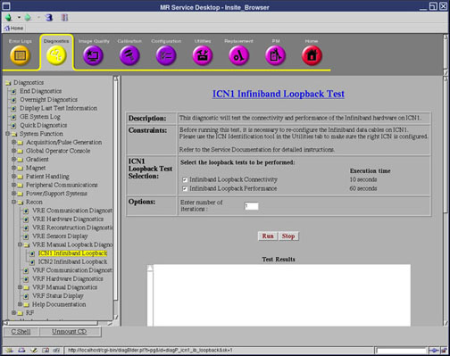
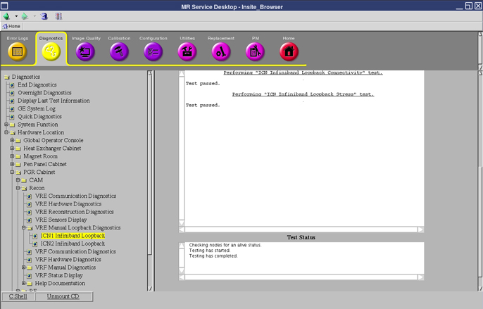

Operating Documentation
Direction 5670006, Rev# 1
Discovery MR750w GEM Service Methods
Module Version 5.0, Version Date 5/5/10
Operating Documentation |
Diagnostics > System Function > Recon > VRE Manual Loopback Diagnostics > ICN Infiniband Loopback
Diagnostics > Hardware Location > PGR Cabinet > Recon >VRE Manual Loopback Diagnostics > ICN Infiniband Loopback
Illustration 1: ICN Infiniband Loopback Test

This diagnostic tests the performance and connectivity between the ports of a single Sun 4100 ICN (as part of a multi-ICN system) to rule out the hardware issues specific to an ICN. Infiniband is a high-throughput low latency interconnect used for acquisition and recon data transfers between ICNs. This does not apply to the Sun 4170 ICNs, as they do not support Infiniband.
This diagnostic supports two test modes: connectivity and performance. The connectivity test uses the Infiniband “traceroute” utility to trace the path between the two Infiniband ports on an ICN in order to establish connectivity. The performance test verifies that the Infiniband link (includes Infiniband board and cable) between the two ports on an ICN meets the minimum performance requirements. The performance test sends messages of different sizes starting from 1K bytes to 1M bytes for multiple iterations and ensures the through-put is as expected.
This diagnostic should be used during one of the following conditions:
After the Ethernet diagnostics are complete.
If the system log indicates a problem with the Infiniband. This diagnostic should be conducted in conjunction with the ICN Infiniband Stress diagnostic and the ICN Infiniband Connectivity diagnostic to isolate problems related to the cable or ICN hardware.
| ||||
| This diagnostic does not apply to a single ICN system. The ICN Infiniband Loopback Test can only be generated within a multi-ICN system. | ||||
Infiniband cables
VRE (Infiniband hardware)
| ||||
| Electrocution Hazard! | ||||
| dangerous voltages are present throughout the system cabinet when power is applied. | ||||
| Refer to Lockout/tagout for the pgr pdu/gradient subsystem. |
Before running this diagnostic, please do the following actions:
Ensure that the Ethernet cabling and Ethernet switches are functioning correctly.
The Infiniband data cables must be connected in their original configuration.
Reconfigure the Infiniband data cables on the selected ICN. Go to Utilities >> Toolbox >> VRE >> ICN Identification to make sure the right ICN is configured.
| NOTE: | This test will unconditionally pass for a one ICN product configuration. |
Disconnect the Infiniband cable from the ICN you are not conducting the test on. Connect this cable to the other port on the ICN you have selected to run tests on.
On the ICN Infiniband Loopback Test screen, select loopback tests to be performed. You can select either [Infiniband Loopback Performance], [Infiniband Loopback Connectivity], or both.
Enter in the desired iteration amounts in the fields provided.
Click [Run].
| NOTE: | Once you click [Run], do not click anywhere else in the Common Service Desktop until the test is complete. If you need to abort the test prior to its completion, you must click [Stop]. |
Ensure the diagnostic passed by reviewing the Test Results and Test Status areas. For the loopback test, the Test Results will display as shown in Illustration 2.
Illustration 2: ICN Infiniband Test Results

If the diagnostic does not pass, review the error log and corresponding extended error message for subsequent actions. Additional responses to the diagnostic's results are outlined in Table 1.
Table 1: Diagnostic Results
| Result | Description | GE Field Action |
| Green LED next to the Infiniband board Port 1 is not on. |
|
|
| Yellow LED next to the Infiniband board Port 1 is not on. |
|
|
| ICN Infiniband fails the diagnostic. |
|
|
| ||||
| When this diagnostic is complete, perform a scan to ensure the system is operating correctly. | ||||